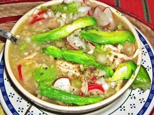
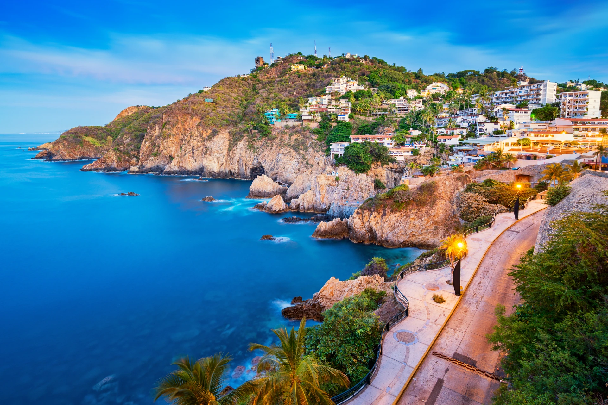

el "Pozole Guerrero". Aunque similar al pozole que se encuentra en otras regiones de México, el pozole guerrerense tiene su propio estilo distintivo. Se prepara con maíz cacahuacintle, carne de cerdo o pollo, y una variedad de condimentos locales que le dan un sabor único. Suele servirse con acompañamientos como lechuga, rábano, cebolla, chile y limón.

El lugar más famoso de Guerrero es, sin duda, Acapulco. Conocido internacionalmente por sus playas de arena dorada, su vibrante vida nocturna y su hermoso paisaje costero, Acapulco es uno de los destinos turísticos más populares de México.

Notas relevantes:
Cultura ancestral: Guerrero es hogar de diversas comunidades
indígenas, como los nahuas, mixtecos, y tlapanecos, que conservan sus
tradiciones, idiomas y artesanías ancestrales. La artesanía de Guerrero
es especialmente conocida por sus tejidos de palma, cerámica, textiles
y joyería de plata.
El Tianguis Turístico: Este evento es una de las ferias turísticas
más importantes de México y se lleva a cabo en diferentes destinos
turísticos cada año. En 2019, Acapulco, Guerrero, fue la sede del
Tianguis Turístico, donde se promocionaron los atractivos turísticos
del estado ante una audiencia nacional e internacional.